ab-buccinides.Rmdlibrary(dplyr)
library(lubridate)
library(tidyr)
library(ggplot2)
# devtools::install_github("r-spatial/sf")
library(sf)
library(raster)
library(fasterize)
library(igraph)
library(rasterVis)
library(cowplot)
library(deeptools)
# devtools::document()
# devtools::document()
# devtools::load_all(here::here(""))# load data
export_file <- system.file("data_orig/export_last.csv", package = "deeptools")
liste_photo <- system.file("data_orig/liste_photo.txt", package = "deeptools")mission2 <- readr::read_csv(export_file) %>%
dplyr::select(-comment) %>%
tidyr::extract(name,
into = "datetime", regex = "_([[:digit:]]+).",
remove = FALSE
) %>%
mutate(datetime = ymd_hms(datetime, tz = "UTC")) %>%
# clean names of species
mutate(name_fr_clean = thinkr::clean_vec(name_fr, unique = FALSE)) %>%
group_by(username) %>%
mutate(
user_id = paste(username, as.character(as.numeric(as.factor(datDeb))), sep = "-")
) %>%
ungroup()#> Parsed with column specification:
#> cols(
#> id = col_integer(),
#> image_id = col_integer(),
#> name = col_character(),
#> username = col_character(),
#> userlevel = col_integer(),
#> comment = col_character(),
#> datDeb = col_datetime(format = ""),
#> datFin = col_datetime(format = ""),
#> obs_code = col_character(),
#> name_fr = col_character(),
#> pos1x = col_integer(),
#> pos1y = col_integer(),
#> pos2x = col_integer(),
#> pos2y = col_integer(),
#> length = col_integer(),
#> middle_x = col_integer(),
#> middle_y = col_integer(),
#> polygon_values = col_character()
#> )#> Warning in rbind(names(probs), probs_f): number of columns of result is not
#> a multiple of vector length (arg 1)#> Warning: 305088 parsing failures.
#> row # A tibble: 5 x 5 col row col expected actual file expected <int> <chr> <chr> <chr> <chr> actual 1 100288 pos2x an integ… NULL '/usr/local/lib/R/site-library/deeptools… file 2 100288 pos2y an integ… NULL '/usr/local/lib/R/site-library/deeptools… row 3 100288 length an integ… NULL '/usr/local/lib/R/site-library/deeptools… col 4 100288 middle… an integ… NULL '/usr/local/lib/R/site-library/deeptools… expected 5 100288 middle… an integ… NULL '/usr/local/lib/R/site-library/deeptools…
#> ... ................. ... ........................................................................... ........ ........................................................................... ...... ........................................................................... .... ........................................................................... ... ........................................................................... ... ........................................................................... ........ ...........................................................................
#> See problems(...) for more details.Function to_carto extract and transform data as spatial object for following analyses.
#> # A tibble: 453 x 2
#> username n
#> <chr> <int>
#> 1 chipiok 14183
#> 2 grillus33 5230
#> 3 tiffk67 2534
#> 4 classe 2057
#> 5 Audrette 1917
#> 6 Kazu 1819
#> 7 fetescience 1731
#> 8 Steatoda 1516
#> 9 Pierre 1367
#> 10 Azaldar 1231
#> # … with 443 more rows#> # A tibble: 3,251 x 2
#> image_id n
#> <int> <int>
#> 1 11873 101
#> 2 11201 88
#> 3 10747 86
#> 4 11383 86
#> 5 12794 85
#> 6 12783 83
#> 7 12200 82
#> 8 11830 80
#> 9 11379 79
#> 10 11947 78
#> # … with 3,241 more rowsfilter_col = username, filter_val = "Lawzama", image_id == "10681"
#> # A tibble: 115 x 2
#> image_id n
#> <int> <int>
#> 1 12860 12
#> 2 10957 10
#> 3 12568 10
#> 4 10853 9
#> 5 11704 8
#> 6 12350 8
#> 7 10821 7
#> 8 11383 7
#> 9 11517 7
#> 10 11705 7
#> # … with 105 more rows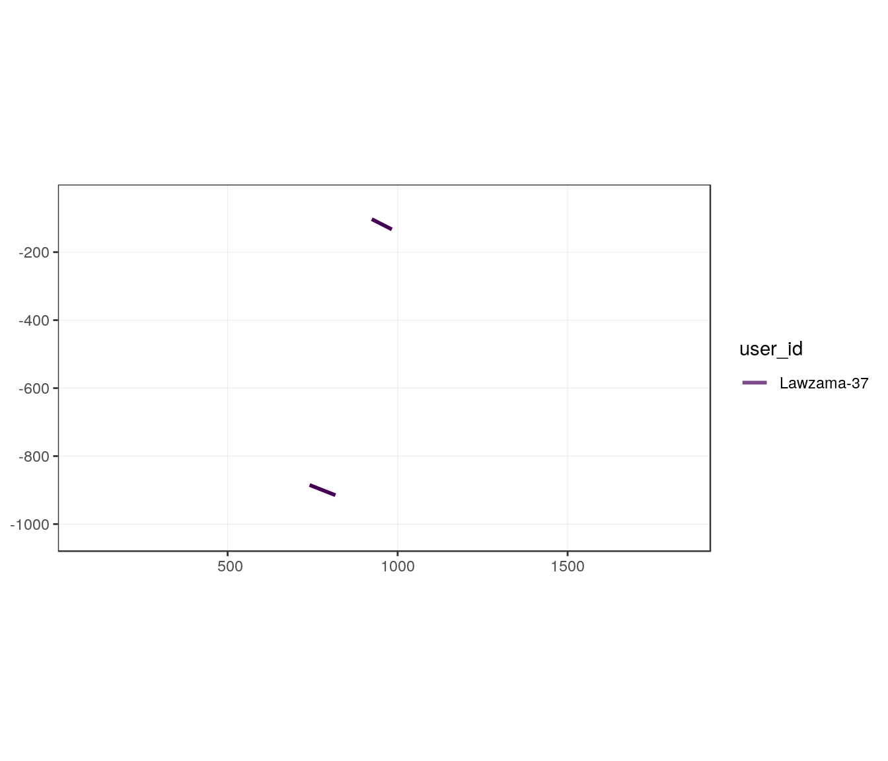
filter_col = username, filter_val = "Kazu", image_id == "10681"
gg_users_image(x = ONC2_bucc_carto,
filter_col = username, filter_val = "Kazu",
image_id = 10681)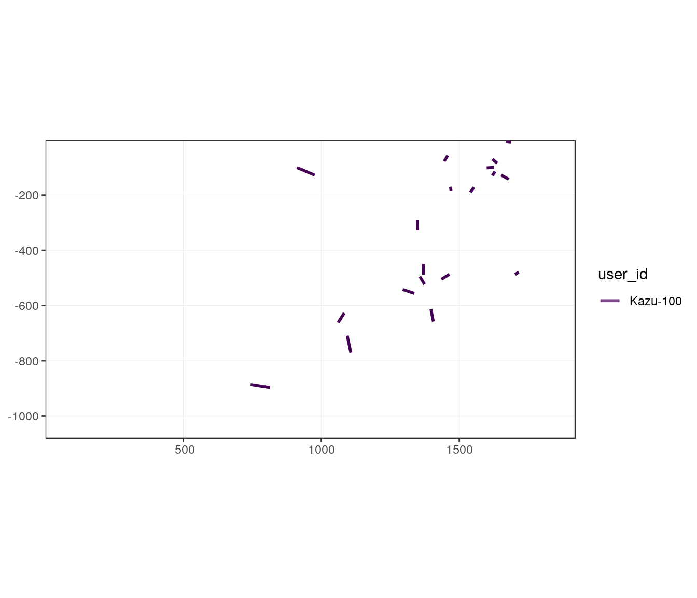
filter_col = username, filter_val = c("Kazu", "Lawzama"), image_id == "10681"
gg_users_image(x = ONC2_bucc_carto,
filter_col = username, filter_val = c("Kazu", "Lawzama"),
image_id = 10681)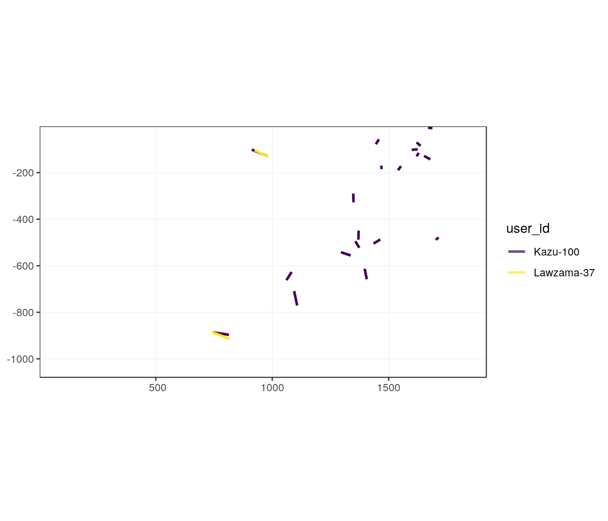
This allows to check visually what sizes of buffer we can use to determine animals discovered by two persons.
# Number of animals seen on the image by username
ONC2_bucc %>%
filter(image_id == 10681) %>%
count(user_id)#> # A tibble: 4 x 2
#> user_id n
#> <chr> <int>
#> 1 Audrette-483 8
#> 2 Kazu-100 19
#> 3 Lawzama-37 2
#> 4 Maguelone-47 10gg_users_image(x = ONC2_bucc_carto,
image_id = 10681, buffer = 10) 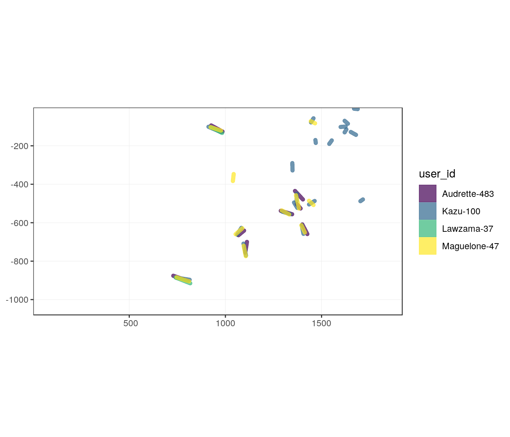
These steps do not have to be run as they are included in find_groups_in_image function presented below. These steps are here to explain the method.
To compute statistics on individuals on images, it is important to know if different users found the same individuals. There is a variability in positioning individuals. Hence, to find out common individuals between users, we need to look in the neighborhood. A quick exploration suggests a buffer area of 10 pixels could be enough for finding overlapping annotations.
The following steps are here to detail the complete process, but at the end, they are all included in a unique fonction find_commons. Note that functions are adapted to the structure of the examle dataset, included column names.
For each image steps are:
user_id. Voronoi is necessary to get non overlapping buffer areas of too close individuals. This also allows for super-imposed individuals.user_id. Transforming polygons into pixels allow to find out the most overlapping groups of polygons among users.image_id
# Choose one image for one user
image_id <- "10681"
user_id <- "Kazu-100"
bucc_image_user <- ONC2_bucc_carto %>%
dplyr::filter(image_id == !!image_id,
user_id == !!user_id)
r_image <- raster(bucc_image_user, res = 0.5)
dist_buffer <- 10
# Calculate voronoi for one user_id
image_user_intermediates <- voronoi_rasterize(
x = bucc_image_user,
dist_buffer = dist_buffer,
r_image = r_image,
keep_intermediate = TRUE)#> Warning: attribute variables are assumed to be spatially constant
#> throughout all geometries# Show intermediate steps
p1 <- ggplot(image_user_intermediates$points_in_voronoi) +
geom_sf(aes(fill = image_pol_id)) +
geom_sf(data = st_cast(st_geometry(bucc_image_user), "POINT"), size = 0.25) +
theme_images(x = image_user_intermediates$points_in_voronoi, fill = "c", color = NULL)
p2 <- ggplot(image_user_intermediates$points_in_voronoi_in_buffer) +
geom_sf(aes(fill = image_pol_id)) +
geom_sf(data = st_cast(st_geometry(bucc_image_user), "POINT"), size = 0.25) +
theme_images(x = image_user_intermediates$points_in_voronoi, fill = "c", color = NULL)
p3 <- gplot(image_user_intermediates$voronoi_in_buffer_as_raster) +
geom_tile(aes(fill = value)) +
theme_images(x = image_user_intermediates$points_in_voronoi, fill = "c", color = NULL, na.value = NA)
cowplot::plot_grid(plotlist = list(p1, p2, p3), ncol = 3)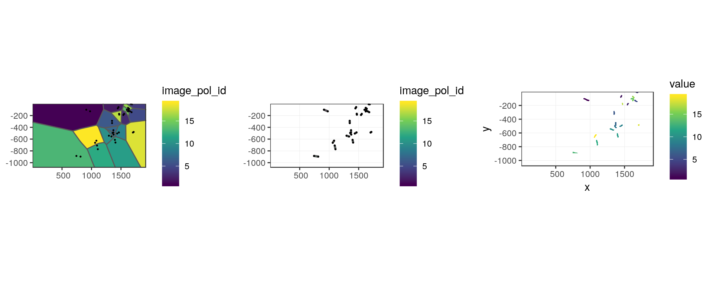
The above intermediate steps are included in the voronoi_stacker function, which stacks rasters of all user_id.
image_id <- "10681"
bucc_image <- ONC2_bucc_carto %>%
dplyr::filter(image_id == !!image_id)
r_image <- raster(bucc_image, res = 0.5)
dist_buffer <- 15
bucc_voronoi_stack <- voronoi_stacker(x = bucc_image,
dist_buffer = dist_buffer,
r_image = r_image)#> Warning: attribute variables are assumed to be spatially constant
#> throughout all geometries
#> Warning: attribute variables are assumed to be spatially constant
#> throughout all geometries
#> Warning: attribute variables are assumed to be spatially constant
#> throughout all geometries
#> Warning: attribute variables are assumed to be spatially constant
#> throughout all geometriesgplot(bucc_voronoi_stack) +
geom_tile(aes(fill = value)) +
facet_wrap(~variable) +
theme_images(x = image_user_intermediates$points_in_voronoi,
fill = "c", color = NULL, na.value = NA) +
ggtitle("Pixels numbered according to marked individuals")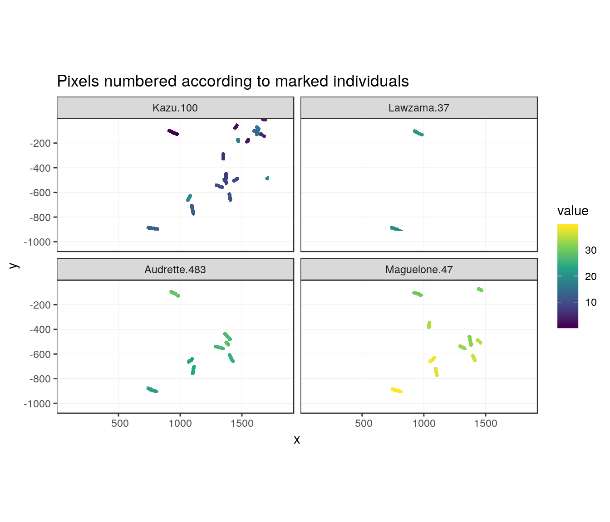
For each pixel of the stack, we can define a group of polygons with the same size as the number of user_id. Indeed, an important part of pixels are not covered by polygons and will be identified as NA-...-NA-...-NA. Once removed those pixels, we can find the most represented groups of polygons.
# Combine layers and find groups of polygons
bucc_groups_count <- group_pixels_count(bucc_voronoi_stack)
bucc_groups_count#> # A tibble: 86 x 2
#> grouped_ids n_pixels
#> <chr> <int>
#> 1 13-20-22-39 7614
#> 2 6-NA-NA-NA 7388
#> 3 NA-NA-NA-34 7172
#> 4 10-NA-26-33 6765
#> 5 1-21-29-30 6583
#> 6 NA-NA-27-NA 6459
#> 7 5-NA-NA-NA 6326
#> 8 3-NA-NA-NA 5492
#> 9 12-NA-24-37 5464
#> 10 16-NA-NA-NA 5201
#> # … with 76 more rowsProblem is that some polygons are in more or less big groups, sometimes being in combination with two different polygons of the same user. We need to find out the best combinations of polygons to associate them to individuals really appearing on the original images.
In step 1, for each polygon independently:
With these two rules, some chosen groups may include polygons associated to other groups.
#' Find in which groups are each polygons
all_image_pol_ids <- pull(bucc_image, image_pol_id) %>% unique()
bucc_groups_top <- find_top_groups(bucc_groups_count,
all_image_pol_ids)
test_ids_in_group <- test_groups_kept(bucc_groups_top)
# Show in how many groups are individuals (Should be only one)
test_ids_in_group$ids_in_groups_count#> # A tibble: 39 x 2
#> list_ids n
#> <dbl> <int>
#> 1 32 2
#> 2 1 1
#> 3 2 1
#> 4 3 1
#> 5 4 1
#> 6 5 1
#> 7 6 1
#> 8 7 1
#> 9 8 1
#> 10 9 1
#> # … with 29 more rowsIt is necessary to create a loop to reduce grouping possibilities based on same rules.
In step two, for each image_pol_id found in multiple groups, keep the only group following the above two rules. Others are removed from list of possibilities. Step one is run again without these groups. Run these two steps until each polygon is found in one and only one group. If an image_pol_id has no group left, it is included in a group alone
# If image_pol_ids are not unique reduce possibilities until it is good
if (test_ids_in_group$max_groups > 1) {
# Run again group selection while removing groups with problems
# _Find groups to remove
test_ids_in_group2 <- test_ids_in_group
bucc_groups_top2 <- bucc_groups_top
group_remove2 <- NULL
while (test_ids_in_group2$max_groups > 1) {
group_remove <- test_ids_in_group2$ids_in_groups_count %>%
filter(n > 1) %>%
inner_join(test_ids_in_group2$ids_in_groups, by = "list_ids") %>%
inner_join(bucc_groups_top2, by = "group_kept") %>%
dplyr::select(-image_pol_id) %>%
distinct() %>%
group_by(list_ids) %>%
arrange(desc(n_pols), desc(n_pixels)) %>%
slice(-1) %>%
pull(group_kept) %>%
unique()
group_remove2 <- unique(c(group_remove2, group_remove))
bucc_groups_top2 <- bucc_groups_count %>%
filter(!grouped_ids %in% group_remove2) %>%
find_top_groups(all_ids = all_image_pol_ids)
# bucc_groups_top2 %>% filter(grepl(7, group_kept))
# bucc_groups_top2 %>% filter(grepl(32, group_kept))
test_ids_in_group2 <- test_groups_kept(bucc_groups_top2)
}
# Retrieve success grouping
bucc_groups_top <- bucc_groups_top2
# Last verification
test_ids_in_group <- test_groups_kept(bucc_groups_top)
}
# Show in how many groups are individuals (Should be only one)
test_ids_in_group$ids_in_groups_count#> # A tibble: 39 x 2
#> list_ids n
#> <dbl> <int>
#> 1 1 1
#> 2 2 1
#> 3 3 1
#> 4 4 1
#> 5 5 1
#> 6 6 1
#> 7 7 1
#> 8 8 1
#> 9 9 1
#> 10 10 1
#> # … with 29 more rowsThe above procedure is included in a unique function available for a unique image: find_groups_in_image(x, image_id) which adds the group name to the original dataset.
We can then verify the grouping procedure visually.
# Add group names in image_sf
bucc_image_grouped <- ONC2_bucc_carto %>%
find_groups_in_image(image_id = "10681")#> Warning: attribute variables are assumed to be spatially constant
#> throughout all geometries
#> Warning: attribute variables are assumed to be spatially constant
#> throughout all geometries
#> Warning: attribute variables are assumed to be spatially constant
#> throughout all geometries
#> Warning: attribute variables are assumed to be spatially constant
#> throughout all geometries# Create specific image with group names
bucc_image_grouped_groups <- bucc_image_grouped %>%
group_by(group_kept) %>%
summarize() %>%
st_centroid() %>%
cbind(st_coordinates(.))#> Warning in st_centroid.sf(.): st_centroid assumes attributes are constant
#> over geometries of xggplot(bucc_image_grouped %>%
mutate(group_kept =
forcats::fct_reorder(group_kept, desc(n_pols)))
) +
geom_sf(aes(color = group_kept),
show.legend = "line",
size = 2 #alpha = 0.1
) +
ggrepel::geom_text_repel(
data = bucc_image_grouped_groups,
aes(x = X, y = Y, label = group_kept)) +
theme_images(x = bucc_image_grouped, fill = NULL, color = "d", na.value = "grey20") +
guides(color = FALSE) +
ggtitle("Identification of groups of marked individuals")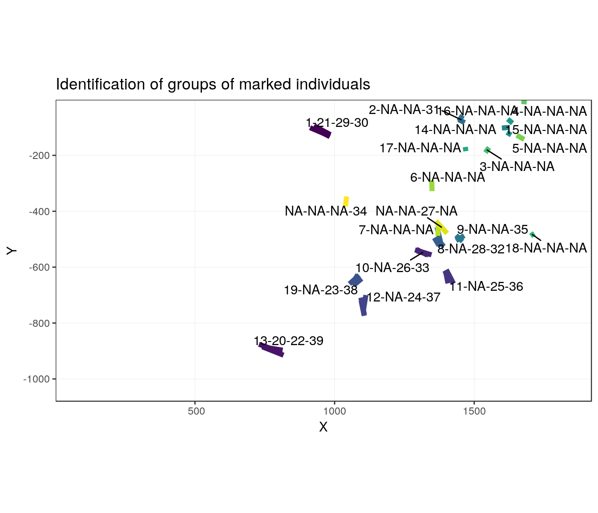
Everything can be included in a unique function find_groups_in_all_images to explore the entire dataset at once.
This takes some time and some place:
find_groups_in_image iteratively in a loop for instance.# Chunk not evaluated in Rmd as results are saved
ONC2_bucc_carto_groups <- find_groups_in_all_images(ONC2_bucc_carto, .progress = TRUE, keep_list = FALSE, as_sf = FALSE)
if (!dir.exists(here::here("inst/outputs"))) {
dir.create("inst/outputs", recursive = TRUE)
}
readr::write_rds(
ONC2_bucc_carto_groups,
here::here("inst/outputs", "ONC2_bucc_carto_groups.rds"),
compress = "gz")outwd <- system.file("outputs", package = "deeptools")
ONC2_bucc_carto_groups <- readr::read_rds(file.path(outwd, "ONC2_bucc_carto_groups.rds"))As a reminder, a group of objects is supposed to be a unique individual.
# ONC2_bucc_carto_groups
# Number of objects per image (already known before)
bucc_nobjects <- ONC2_bucc_carto_groups %>%
count(image_id) %>%
rename(n_objects = n) %>%
count(n_objects) %>%
arrange(desc(n)) %>%
rename(n_images = n)
# Number of marked objects by images
bucc_nobjects#> # A tibble: 86 x 2
#> n_objects n_images
#> <int> <int>
#> 1 4 228
#> 2 6 187
#> 3 8 185
#> 4 5 175
#> 5 7 162
#> 6 9 161
#> 7 12 149
#> 8 10 142
#> 9 3 139
#> 10 11 102
#> # … with 76 more rows# Plot
ggplot(bucc_nobjects) +
geom_col(aes(x = n_objects, y = n_images), width = 1,
fill = yellow, colour = grey) +
ggtitle("Total number of objects identified in images") +
xlab("Number of objects by image") +
ylab("Number of images") +
theme(panel.background = element_rect(fill = blue))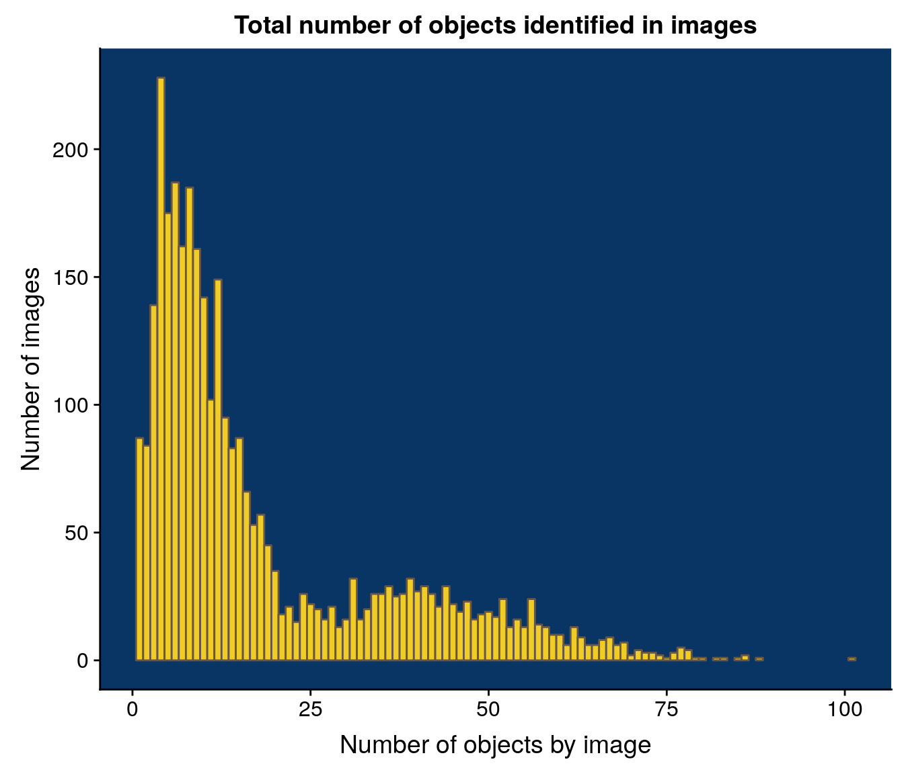
Calculate the number of users who marked the same individual. The proportion column can be used as a threshold to decide if the individual is kept. Indeed, an individual observed by only one of the users may not be a real individual.
# Stats on groups
bucc_groups <- ONC2_bucc_carto_groups %>%
group_by(image_id, group_kept) %>%
summarise(
n_users = n(),
n_user_id = mean(n_user_id),
proportion = n()/mean(n_user_id)
) %>%
ungroup()
# Number of individuals ~ proportion
bucc_groups#> # A tibble: 24,272 x 5
#> image_id group_kept n_users n_user_id proportion
#> <int> <chr> <int> <dbl> <dbl>
#> 1 10680 1-19-NA-44 3 4 0.75
#> 2 10680 10-NA-NA-NA 1 4 0.25
#> 3 10680 11-NA-NA-NA 1 4 0.25
#> 4 10680 12-NA-NA-NA 1 4 0.25
#> 5 10680 13-26-NA-NA 2 4 0.5
#> 6 10680 14-NA-NA-NA 1 4 0.25
#> 7 10680 2-18-36-43 4 4 1
#> 8 10680 3-23-34-40 4 4 1
#> 9 10680 4-22-33-42 4 4 1
#> 10 10680 5-21-32-39 4 4 1
#> # … with 24,262 more rows# Plot
bucc_groups %>%
ggplot() +
geom_histogram(aes(proportion), bins = 10,
fill = yellow, colour = grey) +
ggtitle("Number of individuals ~ proportion") +
xlab("Proportion of users who identified an individual") +
ylab("Number of individuals in this case") +
theme(panel.background = element_rect(fill = blue))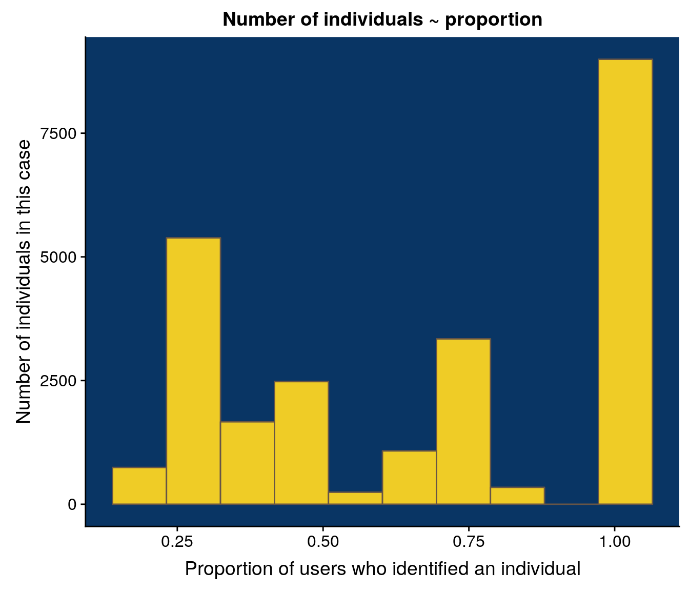
Calculate the number of groups in all images.
## Stats on nb groups by image
bucc_ngroups_count <- bucc_groups %>%
group_by(image_id) %>%
summarise(n_groups = n())
# Number of images
bucc_ngroups_count %>% count(n_groups)#> # A tibble: 36 x 2
#> n_groups n
#> <int> <int>
#> 1 1 327
#> 2 2 467
#> 3 3 441
#> 4 4 381
#> 5 5 265
#> 6 6 198
#> 7 7 120
#> 8 8 77
#> 9 9 60
#> 10 10 58
#> # … with 26 more rows# Plot
ggplot(bucc_ngroups_count) +
geom_histogram(aes(x = n_groups), bins = 30,
fill = yellow, colour = grey) +
ggtitle("Number of groups (~individuals) in images") +
xlab("Number of groups by image") + ylab("Number of images") +
theme(panel.background = element_rect(fill = blue))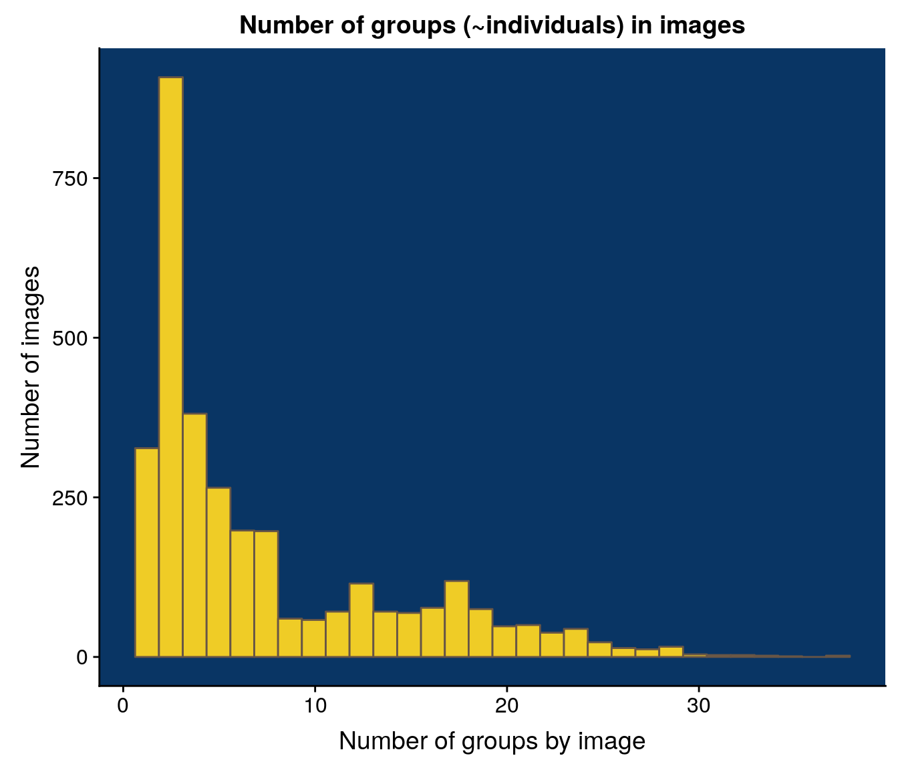
If we only keep groups identified by at least half of the users, we can recalculate the number of groups by image.
## Stats on nb groups by image
bucc_ngroups_count_thd <- bucc_groups %>%
filter(proportion >= 0.5) %>%
group_by(image_id) %>%
summarise(n_groups = n())
# Number of images
bucc_ngroups_count_thd %>% count(n_groups)#> # A tibble: 27 x 2
#> n_groups n
#> <int> <int>
#> 1 1 655
#> 2 2 680
#> 3 3 513
#> 4 4 327
#> 5 5 145
#> 6 6 71
#> 7 7 50
#> 8 8 71
#> 9 9 92
#> 10 10 92
#> # … with 17 more rows# Plot
ggplot(bucc_ngroups_count_thd) +
geom_histogram(aes(x = n_groups), bins = 30,
fill = yellow, colour = grey) +
ggtitle("Number of groups (~individuals) in images") +
xlab("Groups with proportion >= 0.5 by image") + ylab("Number of images") +
theme(panel.background = element_rect(fill = blue))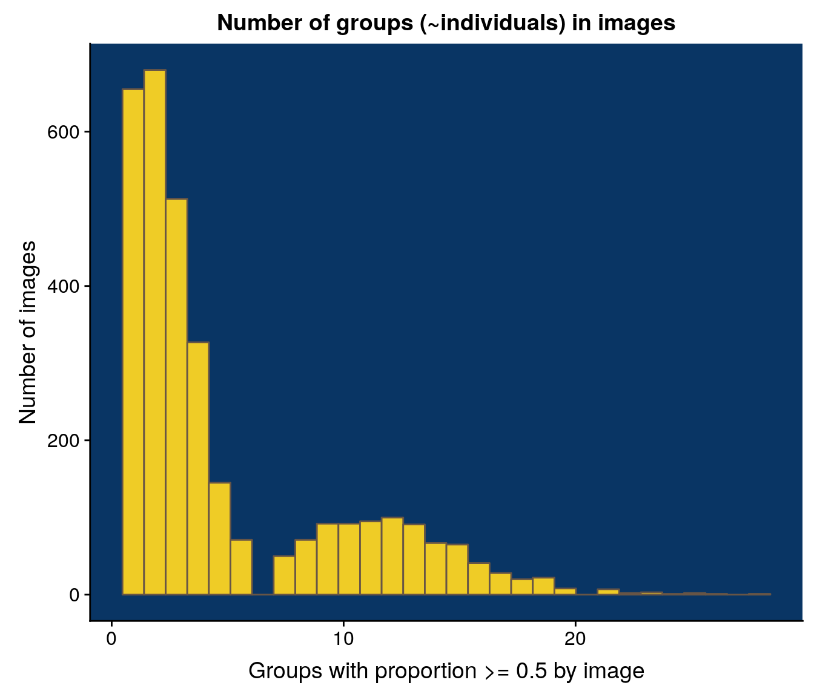
We assume that a group is a unique individual.
We also remove groups identified by less than 50% of users.
# Mean size of individuals
bucc_lengths <- ONC2_bucc_carto_groups %>%
left_join(bucc_groups %>%
dplyr::select(image_id, group_kept, proportion),
by = c("image_id", "group_kept")) %>%
filter(proportion >= 0.5) %>%
group_by(image_id, group_kept) %>%
summarise(mean_length = mean(length))
ggplot(bucc_lengths) +
geom_histogram(aes(mean_length), bins = 50,
fill = yellow, colour = grey) +
scale_x_log10() +
theme(panel.background = element_rect(fill = blue)) +
ggtitle("Distribution of lengths of individuals") +
xlab("Group mean length (log scale)") +
ylab("Number of individuals")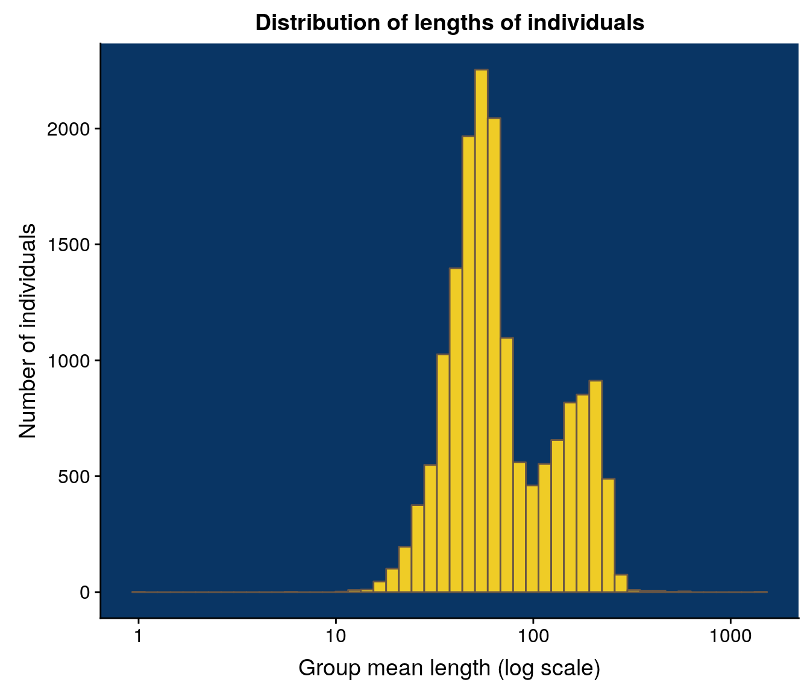